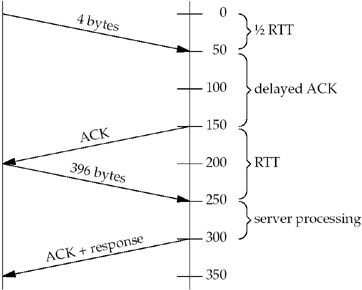
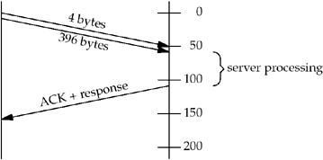
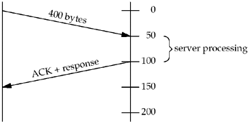

Chapter 7
| | | | | 7.2 | Figure E.5 shows one solution to this exercise. We have removed the printing of the data string returned by the server as that value is not needed.
Figure E.5 Print socket receive buffer size and MSS before and after connection establishment.
sockopt/rcvbuf.c
1 #include "unp.h"
2 #include <netinet/tcp.h> /* for TCP_MAXSEG */
3 int
4 main(int argc, char **argv)
5 {
6 int sockfd, rcvbuf, mss;
7 socklen_t len;
8 struct sockaddr_in servaddr;
9 if (argc != 2)
10 err_quit("usage: rcvbuf <IPaddress>");
11 sockfd = Socket(AF_INET, SOCK_STREAM, 0);
12 len = sizeof(rcvbuf);
13 Getsockopt(sockfd, SOL_SOCKET, SO_RCVBUF, &rcvbuf, &len);
14 len = sizeof(mss);
15 Getsockopt(sockfd, IPPROTO_TCP, TCP_MAXSEG, &mss, &len);
16 printf("defaults: SO_RCVBUF = %d, MSS = %d\n", rcvbuf, mss);
17 bzero(&servaddr, sizeof(servaddr));
18 servaddr.sin_family = AF_INET;
19 servaddr.sin_port = htons(13); /* daytime server */
20 Inet_pton(AF_INET, argv[1], &servaddr.sin_addr);
21 Connect(sockfd, (SA *) &servaddr, sizeof(servaddr));
22 len = sizeof(rcvbuf);
23 Getsockopt(sockfd, SOL_SOCKET, SO_RCVBUF, &rcvbuf, &len);
24 len = sizeof(mss);
25 Getsockopt(sockfd, IPPROTO_TCP, TCP_MAXSEG, &mss, &len);
26 printf("after connect: SO_RCVBUF = %d, MSS = %d\n", rcvbuf, mss);
27 exit(0);
28 }
First, there is no "correct" output from this program. The results vary from system to system. Some systems (notably Solaris 2.5.1 and earlier) always return 0 for the socket buffer sizes, preventing us from seeing what happens with this value across the connection. With regard to the MSS, the value printed before connect is the implementation default (often 536 or 512), while the value printed after connect depends on a possible MSS option from the peer. On a local Ethernet, for example, the value after connect could be 1,460. After a connect to a server on a remote network, however, the MSS may be similar to the default, unless your system supports path MTU discovery. If possible, run a tool like tcpdump (Section C.5) while the program is running to see the actual MSS option on the SYN segment from the peer. With regard to the socket receive buffer size, many implementations round this value up after the connection is established to a multiple of the MSS. Another way to see the socket receive buffer size after the connection is established is to watch the packets using a tool like tcpdump and look at TCP's advertised window. | | | | 7.3 | Allocate a linger structure named ling and initialize it as follows:
str_cli(stdin, sockfd);
ling.l_onoff = 1;
ling.l_linger = 0;
Setsockopt(sockfd, SOL_SOCKET, SO_LINGER, &ling, sizeof(ling));
exit(0);
This should cause the client TCP to terminate the connection with an RST instead of the normal four-segment exchange. The server child's call to readline returns an error of ECONNRESET and the message printed is as follows:
readline error: Connection reset by peer
The client socket should not go through the TIME_WAIT state, even though the client did the active close. | | | | 7.4 | The first client calls setsockopt, bind, and connect. But between the first client's calls to bind and connect, if the second client calls bind, EADDRINUSE is returned. But as soon as the first client connects to the peer, the second client's bind will work, since the first client's socket is then connected. The only way to handle this is for the second client to try calling bind multiple times if EADDRINUSE is returned, and not give up the first time the error is returned. | | | | 7.5 | We run the program on a host with multicast support (MacOS X 10.2.6).
macosx % sock -s 9999 & start first server with wildcard
[1] 29697
macosx % sock -s 172.24.37.78 9999 try second server, but without -A
can't bind local address: Address already in use
macosx % sock -s -A 172.24.37.78 9999 & try again with -A; works
[2] 29699
macosx % sock -s -A 127.0.0.1 9999 & third server with -A; works
[3] 29700
macosx % netstat -na | grep 9999
tcp4 0 0 127.0.0.1.9999 *.* LISTEN
tcp4 0 0 172.24.37.78.9999 *.* LISTEN
tcp4 0 0 *.9999 *.* LISTEN
| | | | 7.6 | We first try on a host that supports multicasting, but does not support the SO_REUSEPORT option (Solaris 9).
solaris % sock -s -u 8888 & first one starts
[1] 24051
solaris % sock -s -u 8888
can't bind local address: Address already in use
solaris % sock -s -u -A 8888 & try second again with -A; works
solaris % netstat -na | grep 8888 we can see the duplicate bindings
*.8888 Idle
*.8888 Idle
On this system, we do not need to specify SO_REUSEADDR for the first bind, only for the second. Finally, we run this scenario under MacOS X 10.2.6, which supports multicasting and the SO_REUSEPORT option. We first try SO_REUSEADDR for both servers, but this does not work.
macosx % sock -u -s -A 7777 &
[1] 17610
macosx % sock -u -s -A 7777
can't bind local address: Address already in use
Next we try SO_REUSEPORT, but only for the second server, not for the first. This does not work since a completely duplicate binding requires the option for all sockets that share the binding.
macosx % sock -u -s 8888 &
[1] 17612
macosx % sock -u -s -T 8888
can't bind local address: Address already in use
Finally we specify SO_REUSEPORT for both servers, and this works.
macosx % sock -u -s -T 9999 &
[1] 17614
macosx % sock -u -s -T 9999 &
[2] 17615
macosx % netstat -na | grep 9999
udp4 0 0 *.9999 *.*
udp4 0 0 *.9999 *.*
| | | | 7.7 | This does nothing because ping uses an ICMP socket and the SO_DEBUG socket option affects only TCP sockets. The description for the SO_DEBUG socket option has always been something generic such as "this option enables debugging in the respective protocol layer," but the only protocol layer to implement the option has been TCP. | | | | 7.8 | Figure E.6 shows the timeline.

| | | | 7.9 | Setting the TCP_NODELAY socket option causes the data from the second write to be sent immediately, even though the connection has a small packet outstanding. We show this in Figure E.7. The total time in this example is just over 150 ms.

| | | | 7.10 | The advantage to this solution is reducing the number of packets, as we show in Figure E.8.

| | | | 7.11 | Section 4.2.3.2 states: "The delay MUST be less than 0.5 seconds, and in a stream of full-sized segments, there SHOULD be an ACK for at least every second segment." Berkeley-derived implementations delay an ACK by at most 200 ms (p.821 of TCPv2). | | | | 7.12 | The server parent in Figure 5.2 spends most of its time blocked in the call to accept and the child in Figure 5.3 spends most of its time blocked in the call to read, which is called by readline. The keep-alive option has no effect on a listening socket so the parent is not affected should the client host crash. The child's read will return an error of ETIMEDOUT, sometime around two hours after the last data exchange across the connection. | | | | 7.13 | The client in Figure 5.5 spends most of its time blocked in the call to fgets, which in turn is blocked in some type of read operation on standard input within the standard I/O library. When the keep-alive timer expires around two hours after the last data exchange across the connection, and all the keep-alive probes fail to elicit a response from the server, the socket's pending error is set to ETIMEDOUT. But the client is blocked in the call to fgets on standard input and will not see this error until it performs a read or write on the socket. This is one reason why we modified Figure 5.5 to use select in Chapter 6. | | | | 7.14 | This client spends most of its time blocked in the call to select, which will return the socket as readable as soon as the pending error is set to ETIMEDOUT (as we described in the previous solution). | | | | 7.15 | Only two segments are exchanged, not four. There is a very low probability that the two systems will have timers that are exactly synchronized; hence, one end's keep-alive timer will expire shortly before the other's. The first one to expire sends the keep-alive probe, causing the other end to ACK this probe. But the receipt of the keep-alive probe causes the keep-alive timer on the host with the (slightly) slower clock to be reset for two hours in the future. | | | | 7.16 | The original sockets API did not have a listen function. Instead, the fourth argument to socket contained socket options, and SO_ACCEPTCON was used to specify a listening socket. When listen was added, the flag stayed around, but it is now set only by the kernel (p.456 of TCPv2). |
 |